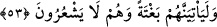

53. Senden, azâbı çarçabuk (getirmeni) istiyorlar. Eğer önceden tayin edilmiş bir
vâde olmasaydı, azap elbette onlara gelip çatmıştı. Fakat onlar farkında değilken, o
ansızın kendilerine geliverecektir.
“Senden, azâbı çarçabuk (getirmeni) istiyorlar.”
“İsti’câl”, vakti gelmeden bir şeyi acele istemek demektir. Yani, kâfirler, kendilerine
azap getirmen hususunda seni acele ettirirler.
Nadr b. Haris gibileri Rasûlullah (s.a.)’le alay ederek “Bu vaad olunan azâb ne
zaman? Gökten taş yağdır (da görelim)!” derlerdi.
Âyet, yaratılışındaki “acelelik” huyundan dolayı âfiyet hâline sabredemeyen ve azâbı
acele isteyen insana işâret eder. Allah sabır vermezse belâlara ve musîbete nasıl
sabredecek?
Nitekim Allah Teâlâ, Rasûlü Muhammed (s.a)’e hitaben buyurmuştur ki: “Sabret,
sabrın da ancak Allah’ın yardımı iledir” (Nahl, 16/127)
Allah Teâlâ’dan her musîbete karşı âfiyet isteriz.
“Eğer önceden tayin edilmiş bir vâde” belirli ve muayyen bir vakit “olmasaydı,”
ilâhî “azap elbette onlara gelip çatmıştı.”
Bu muayyen vakit, kıyamet günüdür. Allah Teâlâ buyurur ki: “Bilakis, Kıyamet saati,
onların vaad zamanıdır...” (el-Kamer,54/46) Bunun sebebi, Allah Teâlâ, Rasûlullah
(s.a)’e kavmini kökünden helâk etmeyeceğini, azaplarını kıyamete kadar tehir edeceğini
vaad etmiş olmasıdır.
Allah’ın kadîm iradesi, ezelî hikmette olacak her mukadder şey için bir süre (ecel)
belirlemiştir. Bu ne öne geçer ve ne de geriye kalır.
Âyet, mukadder vaktin dışında azâbı acele istemenin bir fayda ve yararı olmayacağına
işâret eder; zira bu talep, yerilmiş ve kötülenmiştir. Dolayısıyla nefsin zamansız istek ve
arzularını yerine getirmek için acele davranmanın nasıl bir yararı olur? Ve bu nasıl
kötülenmiş olmasın?
“Fakat onlar farkında değilken, o ansızın kendilerine geliverecektir.”
Şüphesiz bu sürenin sonunda, belirlenen ilâhî azâb onlar farkında olmaksızın ansızın
onlara gelir.
Râğıb Isfahânî der ki: “, zannedilmeyen yönden bir şeyin ansızın gelmesi ve
vukû bulması anlamına gelir. Halbuki onlar azâbın kendilerine geleceğini bilmezler;
onlar habersizdirler.
Fakîr (Bursevî) der ki: Şayet, âhiret azâbı ansızın olan şeylerden değildir; o halde
nasıl ansızın gelir? dersen, şöyle derim: Onlara ölüm ansızın gelir; yâni zannetmedikleri
bir anda vukû bulur. Onun da zamanı kıyamet zamanına kadar varır ve ona bitişir. Bu
yüzden yarın ki kabir hayatı, âhiret menzillerin ilkidir, başıdır. Rasûlullah (s.a.)’in